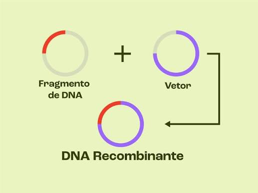
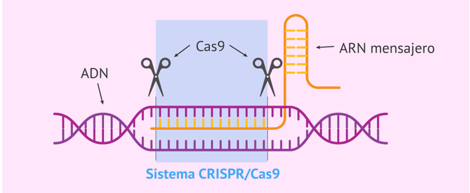

Células, genes e moléculas: o que a engenharia genética contribui para a DermaSkin.
A engenharia genética não seria necessariamente usada diretamente nas células do produto final. As técnicas seriam aplicadas principalmente em laboratório: para estudar características genéticas, produzir moléculas de interesse e analisar aplicações relacionadas à regeneração da pele.

Molécula formada pela associação de fragmentos de DNA. Um gene de interesse é ligado a um vetor — como um plasmídeo, pequena molécula circular de DNA — que o transporta até uma célula hospedeira. Enzimas de restrição cortam o DNA em regiões específicas, e a DNA ligase une o fragmento ao plasmídeo.
Na DermaNova: usado em etapa experimental para produzir moléculas bioativas de interesse, sem precisar modificar geneticamente todas as células da matriz final.

Ferramenta de edição genética que atua sobre regiões específicas do DNA. Um RNA-guia reconhece a sequência-alvo e direciona a proteína Cas9, que realiza o corte. Os mecanismos de reparo da própria célula tentam reconstruir a região cortada. Dependendo do mecanismo de reparo e da estratégia experimental adotada, podem ocorrer alterações na sequência, inativação de genes ou, quando há um molde adequado, modificações mais específicas.
Na DermaNova: usado apenas em condições controladas de laboratório, sobre células somáticas ou microrganismos — nunca em embriões ou células germinativas. Exige verificar depois estabilidade genética, viabilidade celular, produção da molécula desejada e possíveis alterações fora do alvo.
Um organismo geneticamente modificado (OGM) teve seu material genético alterado por engenharia genética. Um transgênico é um tipo específico de OGM: recebeu material genético de outra espécie. Todo transgênico é OGM, mas nem todo OGM é transgênico.
Se um microrganismo da DermaNova recebesse um gene de outra espécie, seria OGM e transgênico. Se o CRISPR-Cas9 apenas modificasse um gene já existente no próprio organismo, seria OGM — sem ser transgênico. Em ambos os casos, barreiras físicas, recipientes fechados, esterilização e descarte adequado reduziriam riscos ambientais.
A clonagem produz cópias geneticamente iguais — de organismos completos ou apenas de material genético. Na proposta, o relevante é a clonagem de material genético: copiar uma sequência de DNA para estudo, análise ou uso em DNA recombinante, sem envolver a clonagem de organismos completos.
Necessidade relacionada à regeneração incompleta da pele.
Seleção do que é relevante para o desenvolvimento experimental.
Matriz de ácido hialurônico preparada como suporte.
Células cultivadas em condições controladas.
Clonagem ou engenharia genética, quando necessário.
Produção e análise de moléculas bioativas.
Células e moléculas associadas à matriz de ácido hialurônico.
Testes biológicos, químicos e físicos.
Acompanhamento clínico da regeneração.
Sete etapas descrevem como a matriz atua sobre uma área lesionada.
Destruição de camadas do tecido cutâneo.
DermaSkin é posicionada sobre a região lesionada.
Ambiente hidratado e passagem de nutrientes essenciais.
Células se multiplicam, migram e se organizam no suporte.
Novas camadas celulares ocupam progressivamente a região.
A estrutura temporária perde espaço de forma gradual.
O tecido em formação assume definitivamente a área.
A DermaSkin não reconstrói perfeitamente estruturas originais da pele, como pelos, glândulas e outros componentes especializados — seu papel é dar suporte à regeneração do tecido.
Não basta observar mudança de comportamento da célula: é preciso analisar a sequência de DNA, comparar grupos modificados com grupos controle, e avaliar produção de proteínas, viabilidade celular, estabilidade da modificação, proliferação e possíveis efeitos fora do alvo.
DNA recombinante é mais indicado para associar um gene a um vetor e produzir uma molécula em uma célula hospedeira. CRISPR-Cas9 é mais indicado para estudar ou modificar um gene específico já existente.
Principalmente a liberação acidental de organismos modificados no ambiente. Por isso, recipientes fechados, barreiras físicas, esterilização e descarte adequado são medidas de segurança necessárias.